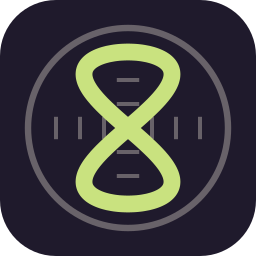

Positioning
The engineer’s rigour, the dancefloor’s trance.
The technical register
- Schematics, firmware, measured numbers in real units
- Panels drawn like the hardware
- Credits upstream work by name, every time
- Visual cues: scope traces, graticules, datasheets, mono type
The spiritual register
- Long nights, deep states, ritual, altitude, starlight
- Faded-film colour, light leaks, star trails, halos
- A sense of discovery: things to find and decode
- Visual cues: Cormorant italic, rose and gold, concentric rings
The brand lives where the two meet. Every page pairs one hard fact with one feeling. Example: “3.0 dB from a real 303” sits beside “for deep states.”
Audience: MPC and Force owners who go deep (hackers, beatmakers, live-set techno and psy producers), then desktop producers who care how a machine is modelled.
The name: keep it, decode it
Recommendation
Keep sd88me as the brand, the handle and the manufacturer string. Don’t rename. Give the name a story instead. It already has three good ones.
Why keep it
- It is already the name on every plugin folder (sd88me - VST - …), across the Open MPC catalog, Discord and GitHub. That recognition took a year to build.
- It is unique. Searching “sd88me” only finds you, which no dictionary word can promise.
- Underground culture rewards cryptic names: AFX, µ-Ziq, Ø, Autechre. Mystery is on-brand.
- sd88.me is a domain hack of the handle itself. It looked unregistered when I checked DNS today (no records found). Grab it first, then check sd88me.com.
What a rename would cost
- Changing the manufacturer field on every plugin and re-releasing all of them.
- Two names in the wild for months: old installs, forum posts, catalog history and saved projects would still say sd88me.
- Folder names change, so installers, the Plugin Manager and upgrade paths need migration work. Test on one device before trusting any host to recall projects across a vendor change.
- A new name has no search history and no community behind it.
If you do want a second name
Use it as a product line under sd88me, never as a replacement. The handle stays the maker. The manufacturer string stays sd88me.
sd88me Editions
The paid line. Plain, premium and clear. My pick.
Double Eight
Spoken form of “88”. Works for a label or a sample-pack imprint.
Octave Works
Nods to the 2:1 ratio in the logo. A good name for desktop plugins, if they ever need their own house.
Logo & sigils
The wordmark is drawn in one stroke weight, like a scope trace. The 88 is literal: each 8 is the Lissajous figure two tones an octave apart draw on an oscilloscope (x = sin 2t, y = sin t). It glows in phosphor. The letters stay in ink.
Wordmark · dusk

Mark · on sky
Clear space
Leave the height of one 8 empty on every side. Minimum size: 72 px wide on screen, 18 mm in print.
Lowercase, always
Write it sd88me in running text: never SD88ME, Sd88me or SD88.me.
Don’t
Don’t outline it, add drop shadows, swap the 8s for a typed “88”, or recolour the letters in phosphor.
Sigils: one for every plugin
Every plugin gets a Lissajous sigil: the figure two tones in a chosen ratio draw. It goes on the card, the datasheet, the panel corner and the installer. Pick the ratio for the instrument’s character. A few examples:
Colour
Taken from faded film at twilight: lifted shadows, never pure black, split-toned toward rose and sage. Dusk is the home look. Dawn is its daylight twin, for docs and print. The four signal colours also encode how each plugin is made.
Type
SyneDisplay · 700/800
Headlines, plugin names
Machinemodule 16
Cormorant GaramondItalic 500 · one phrase per view
for deep states
Instrument SansBody · 400/600
The voice is the TB-303 machine from Lemus, solved as a circuit from Roland’s service-notes schematic.
Martian MonoData · labels, specs, readouts
CH1 110.00 HZ · 2:1 · 0.6–70 SEC
Syne was made for Synesthésies, a French art centre named after crossed senses. That suits a brand about hearing shapes. Use the italic serif for one phrase per view, at most. It works because it’s rare.
Motifs
Star trails
Concentric arcs from a long exposure, turning around a pole. On the site the pole is the oscilloscope. Use them in heroes and covers only.
The scope
Round bezel, graticule, phosphor trace. Make it interactive where possible: tap to change interval, play to hear it.
Ridgelines
Layered mountain silhouettes fading into the page colour. They stand for altitude, distance and the long view.
Grain & light leak
Fine film grain over everything, plus one soft rose leak per view. Keep both subtle: if you notice them, they’re too strong.
For collage art like your reference piece (pyramids, statues, desert, star trails), keep it to release covers and social posts, where it can be loud. Use only images you have rights to. The website stays calmer so the panels can shine.
Voice
Exact
Real numbers and real units. “3.0 dB from 400 notes”, never “incredibly authentic”.
Warm
First person and human. Mention the 2 a.m. sessions, the wife, the flowers.
Lightly mystical
One evocative line per page, earned by the facts around it. Never stack two.
| Write | Not |
|---|
| It runs the 224’s own firmware. | Legendary reverb, faithfully recreated! |
| You supply the ROM from hardware you own. | ROM not included (legal reasons). |
| Made for long nights. | Unleash your sonic journey into the cosmos. |
| The voice comes from Lemus. Thank you. | Based on open-source code. |
Copy deck
Taglines
Circuit-true instruments for deep states.Primary · site hero
Precision for the ineffable.Brand line · about, merch
Two eights. One for the circuit, one for the cosmos.Story line · about
Schematics for the subconscious.Playful · social, stickers
Made for long nights.Sign-off · footers, emails
Short bio · 1 linesd88me builds circuit-true instruments for the Akai MPC: classic machines rebuilt from schematics and firmware, free and open source.
Social bio · 160 charsCircuit-true instruments for deep states. MPC / Force plugins from schematics & firmware. Open MPC. Free + open source. ∞∞
Long bio · about page, presssd88me is a one-person instrument workshop. It began as a username (initials, a birth year, and “me”) and became the name behind more than 25 plugins for Akai’s MPC and Force: a transistor-level TB-303, a Lexicon 224 running its own firmware, a whole Machinedrum in one plugin, and original tools like Crate Digger and Boris Granular. The work sits where exact engineering meets the deep end of techno and psy culture: schematics and service notes on one side, long hypnotic nights on the other. Everything on the MPC is free and open source, built on and around the Open MPC toolchain, and credited to the people whose work it stands on.
Naming plugins
You already have a naming voice: 8W8, 6W6, CW-78, Reverbicon, Osirus, Welle, Profit-8. Keep it. It stays clear of trademarks and rewards people who know the gear.
Emulations
Wink at the model: swap letters for symbols (8W8), translate it (Welle), or blend words (Reverbicon). Never use the maker’s name in the product name.
Originals
Give them a person’s name or a place: Boris, Clementine, Maze. Short, warm and easy to say on a stream.
Folder string
Always sd88me - VST - Name. It is the brand’s most-seen typography, so keep it consistent forever.